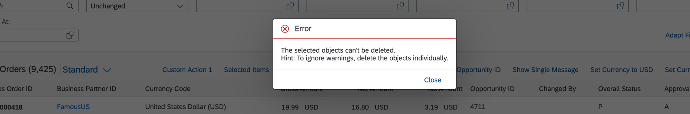
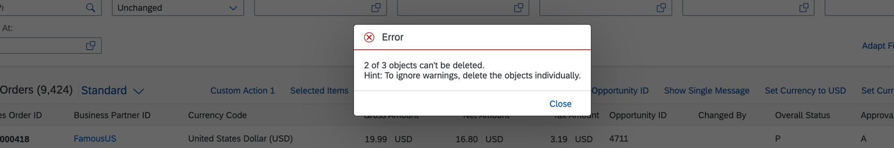

Confirmation Popups for Deletion and Activation for Draft Apps, and Save for Non-Draft Apps and Function Import Actions
Based on the messages from the backend, you can configure confirmation popups for the following scenarios:
Activation triggered from an object page of draft apps
Deletion of an object and performing a function import action from a list report or an object page, in both draft and non-draft apps
When you delete an entry or perform any function import action from a list report or an object page, or when you activate or save an object on the object page, the system displays a confirmation dialog if the backend sends an appropriate warning message with the proper HTTP status code before executing the action. The process is as follows:
You trigger the Delete action or perform a function import action in a list report or an object page. You can also trigger the Save or Delete actions in a non-draft app or Activate action in a draft app. To delete an item, you can select Delete to continue. The app displays a standard UI confirmation for the Delete action.
The app sends the request with header Prefer:
handling=strict.
The action is not executed in the backend. Instead, an HTTP response code 412 is issued with a message.
The message type is persistent while saving or activating, whereas it is transient for Delete and function import actions. If a wrong message type is sent, the system will not display a confirmation popup.
The app shows a confirmation popup with the message sent from the backend.
You can choose to
Confirm.
The app sends the request with header
Prefer: handling=lenient.
The selected action is executed in the backend and the system responds with a message.
You can choose to Cancel in order to terminate the operation.
Confirmation Popup for Deletion and Function Import Actions from List Reports
When you want to delete or perform a function import action on more than one item in a list report, and the backend sends an HTTP response code 412, then instead of a confirmation popup, a message box is displayed with hints to delete or perform the function import action on objects individually.
An option to proceed is only available when you select only one item to delete in the list report and the backend sends an HTTP 412 status code with a warning message.
If you select multiple items, out of which one item sends a warning message, all warnings and errors from the backend are shown in a separate dialog. In such a case, you will not get an option to proceed with this warning. You can choose to delete the items or perform the function import action on items individually.

You cannot configure confirmation popups for a deletion triggered from object page tables.
Configuring Confirmation Popup for Save/Activation on Object Page
In draft scenarios, the system displays warning messages during the save process, for example, if fields have not been filled consistently or if entries are missing. You can enable a confirmation popup that displays all warning and error messages, asking users whether they still want to save the data.
The Save option is available only if there are no error messages.
To enable this popup, in the manifest.json under the object page settings, set
the
showConfirmationOnDraftActivate
indicator to true.
"pages": {
"ObjectPage|STTA_C_MP_Product": {
"entitySet": "STTA_C_MP_Product",
"component": {
"name": "sap.suite.ui.generic.template.ObjectPage",
"settings": {
"showRelatedApps": true,
"tableType": "ResponsiveTable",
"editableHeaderContent": true,
"showConfirmationOnDraftActivate": true,
"sections": {
"to_ProductText::com.sap.vocabularies.UI.v1.LineItem": {
"navigationProperty": "to_ProductText",
"entitySet": "STTA_C_MP_ProductText",
"multiSelect": true,
"createMode": "inline",
"tableType": "ResponsiveTable"
}
}
}
}
}
}
.
.
.
Please note that this topic is currently only applicable to SAP Fiori elements for OData V2.